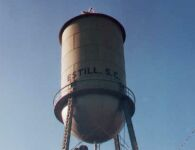
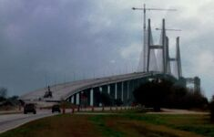
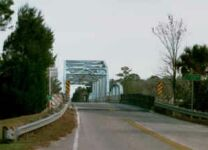
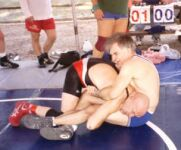
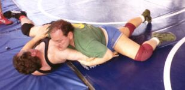

South Carolina-Florida and Sawmill 2002 Ride
No Frames? No problem. This web page designed to work with
![[Any Browser,
Any System, Any Time]](http://www.eskimo.com/~nickz/abasat.gif)
Any Browser, Any System, Any Time.
For more information, see the
Best Viewed With Any Browser
campaign link.
Click here
to go to the Sawmill Wrestling Weekend information page.
Getting ready before the ride -- Nassau County, NY, Jan/Feb. 2002
![[Westbury, NY]](wby_t.jpg)
Before the ride, Stillwell Rd., good-sized hill
near Nassau-Suffolk line.
L.I.E. service road, Westbury, NY.
SC-FL '02 Ride to Sawmill Wrestling Weekend
![[10 mi S of
Denmark, SC]](us321r_t.jpg)

Denmark, SC, about 4:30 AM -- start of ride.
Denmark is a small town south of the capital, Columbia, SC.
Denmark, SC post office. Other small towns in
the vicinity include Norway and Switzerland.
10 miles south of Denmark on US 321. The steam
is from my breath; temperature about 29° F.
Frost on US 321 at dawn
Another view of the frosty dawn.
Sun peeking through, just off US 321.
Coosawhatchie River and abandoned bridge to the
right.
Estill, SC water tower.
Estill, SC at Rtes. 321 and 3. Time for
breakfast.
South Carolina, a mile away from the Georgia border
(the hill in the distance in actually the bridge over the river).
Just past the border in Georgia, looking back into
South Carolina over the Savannah River which is tiny up here but big
along the coast near Savannah (where I crossed it in 1983).
Another view across the border into SC.
The Georgia side of the border.
Bridge over a creek in hilly inland Georgia.
That's Familiar! Joining the 1983
route.
![[Joining
FL '83 route]](jct17_t.jpg)
![[Eulonia, GA
big tree]](tree2_t.jpg)

Join the NY-FL route of 1983 between Savannah and
Richmond Hill, GA.
Swampland near junction of US 17.
A "cow" off of US 17 near Midway, GA.
Entering mosquito country south of Midway, GA.
In 1983 the mosquitos almost ate me alive here. But this time I'm prepared
with plenty of repellant.
45 miles to Brunswick, GA.
One of those grand old mossy trees which almost
blocked the road.
Another big, mossy tree near Eulonia, GA; the
Spanish moss from it survived quite a few months back in NY.
Old and new US 17 crosses river north of Brunswick, GA during rainstorm:
1 of 2 |
2 of 2 (historical site visible to the left)
Old and new bridges in Brunswick, GA:
1 of 2 (don't remember that bridge from 1983) |
2 of 2 (the new bridge is not yet open; traffic
continues along the old bridge just visible to the right)
Woodbine, GA along the Satilla River. There was
almost nothing here in 1983 but now it is a fair-sized town and it even has
its own post office.
In Florida

![[19 miles
from Ocala]](ocala19_t.jpg)
In 1983, this was the 1000-mile point of the ride and it was warm, in the
70's and 80's. In 2002, it was about mile 300 and about 50 degrees, not the
weather I'd expect for Florida but warmer than frosty South Carolina.
Pictures from the GA-FL border on US 17:
1 of 3 (hasn't changed) |
2 of 3 (they did plant some more trees here) |
3 of 3 (but these three trees were here in 1983)
Back in Nassau County (Florida didn't realize that
NY already used the name), on Route 108. ;-)
Cut back through the southernmost tip of
Georgia along the St. Mary's River and finally (in background)
back across the river into Florida again.
On US 301, a quick and scenic route towards
the Tampa area -- here 19 miles north of Ocala.
Citra, FL. Time to give into the garish
billboards advertising freshly picked and squeezed orange juice. The
billboard to the right is one of many counting down the miles to Citra, and
finally pointing to the citrus stand at the left. It was delicious but
unpasteurized so I had to drink it all before getting to Ocala.
Ocala, FL.
North of Bushnell, FL.
North of Bushnell, FL and 23 miles from Sawmill.

Arrival at Sawmill Campground on Thursday
,
perhaps the first one there for the wrestling weekend.
![[Submission clinic]](023_t.jpg) The submission wrestling clinic while it was
pouring rain outside.
Canopy protecting outdoor mat, before tournament.
Time to eat, courtesy of Team Tampa Bay.
The submission wrestling clinic while it was
pouring rain outside.
Canopy protecting outdoor mat, before tournament.
Time to eat, courtesy of Team Tampa Bay.

Freestyle Tournament Pictures:
1 of 6 |
2 of 6 |
3 of 6 |
4 of 6 |
5 of 6 |
6 of 6
Sawmill on Sunday evening, end of the weekend, ready
to leave.
The mat has been rolled up but the canopy is still
there.
Canopy at sunset.

Click
here to send me comments on this web page.
This page has been visited


 times since March 9, 2003 03:54.
times since March 9, 2003 03:54.
nickz@eskimo.com
Page created: March 8, 2003
Last modified: March 9, 2003
![[Westbury, NY]](westbury.jpg)
![[Submission clinic]](023_nr.jpg)
![[10 mi S of
Denmark, SC]](us321rr.jpg)
![[Joining
FL '83 route]](jct17.jpg)
![[Eulonia, GA
big tree]](tree2.jpg)
![[19 miles
from Ocala]](ocala19.jpg)
{kind=link}
{kind=link}
{kind=link}
{kind=link}
{kind=link}
{kind=link}
{kind=link}
{kind=link}
{kind=link}
{kind=link}
{kind=link}
{kind=link}
{kind=link}
{kind=link}
{kind=link}
{kind=link}
{kind=link}
{kind=link}
{kind=link}
{kind=link}
{kind=link}
{kind=link}
{kind=link}
{kind=link}
{kind=link}
{kind=link}
{kind=link}
{kind=link}
{kind=link}
{kind=link}
{kind=link}
{kind=link}
{kind=link}
{kind=link}
{kind=link}
{kind=link}
{kind=link}
{kind=link}
{kind=link}
{kind=link}
{kind=link}
{kind=link}
{kind=link}
{kind=link}
{kind=link}